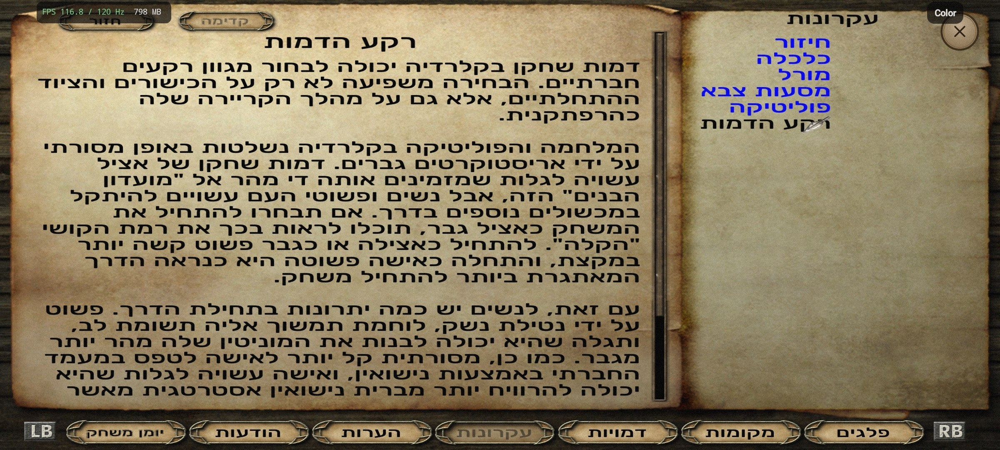

Ringkasan fitur
Kompatibilitas Android
Mendukung Android 7.0 hingga Android 17 dan rilis yang lebih baru, dengan threading yang ditingkatkan pada Android 10 dan yang lebih baru. Mode layar penuh HDR dan tanpa potongan memberikan pengalaman paling imersif. Penyematan inti membantu meningkatkan performa, dan dukungan layar dengan refresh rate tinggi menjaga gerakan tetap mulus. Build ARMv7 dan ARMv8 tersedia, dengan kompatibilitas penuh di GPU Adreno, PowerVR, dan Mali.
Dukungan bahasa
Berkas lokalisasi dimuat dari jalur yang sama seperti di PC. Fitur bahasa lanjutan, seperti bentuk morfologis, kasus gramatikal, dan variasi kala, berfungsi kembali, dan audio suara yang dilokalkan dipulihkan. Bahasa Indonesia didukung, termasuk fon. Bahasa yang tidak pernah disertakan dalam game asli mendapatkan terjemahan AI berkualitas tinggi yang sadar konteks, serta toolkit bawaan untuk menerjemahkan ke bahasa baru. Alat diagnostik memeriksa berkas bahasa dari masalah.
Instalasi
Lokalisasi dapat dipasang dari Pustaka di launcher, atau dengan menempatkan berkasnya langsung di folder yang sesuai.
Jalur folder
Berkas lokalisasi dibaca dari folder berikut, dengan {code} adalah kode bahasa, seperti en atau ar:
patch/languages/{code}/untuk teks gamepatch/Modules/{module}/languages/{code}/untuk teks modulpatch/Data/languages/{code}/font_data.xmluntuk tabel glyph fonmain/Textures/languages/{code}/font.ddsuntuk atlas tekstur fonpatch/Modules/{module}/Sounds/languages/{code}/untuk audiomain/Sounds/languages/{code}/untuk audio


Kustomisasi kontrol
Kendalikan game dengan kontrol sentuh di layar, gamepad, atau keyboard dan mouse, lalu atur semuanya dari launcher. Pilih tema untuk kontrol sentuh, sesuaikan sensitivitas dan inversi, dan tentukan apakah tombol arah merespons geseran atau ketukan. Tambahkan tombol khusus dan pilih ikonnya. Kontrol sentuh muncul secara kondisional untuk layar saat ini dan bereaksi saat game berganti layar, sehingga kontrol sesuai dengan yang sedang Anda lakukan.
Modul game
Perutean direktori modul berfungsi kembali, memungkinkan Anda memainkan modul buatan komunitas, dan aset dimuat dengan benar, dengan cadangan. Masalah kompatibilitas shader dan transparansi diperbaiki, begitu pula perbedaan material dan masalah animasi. Penemuan kontrol menyarankan pemetaan tombol ke tombol yang diharapkan modul. Warna dan ikon dapat dikustomisasi untuk modul tertentu, dan untuk mod mesin yang dibundel ke dalam modul.


Modul pihak ketiga yang kompatibel
- Gekokujo
- Persistent World
- 1860s Old America
- 1257AD - Enhanced Edition (partially)
- A World of Ice and Fire (partially)
- The Last Days of the Third Age (partially)
- Perisno (partially)
- Rome at War
Instalasi modul
Setiap modul berada di foldernya sendiri, patch/Modules/{module}/. Informasi pengembangan modul:
Pengembangan Modul
Kustomisasi UI sentuh
touch.csv mengubah tampilan tombol sentuh dan posisi awalnya. Ini adalah berkas teks biasa dengan satu pengaturan per baris. Berikut contoh kecilnya:
attack.color|red
defend.x|80
*.color|#FFD700Bacalah baris demi baris:
attack.color|redmembuat tombol serang berwarna merah.defend.x|80memindahkan tombol bertahan sehingga pusatnya berada di 80% lebar layar, dihitung dari kiri.*.color|#FFD700membuat semua tombol lainnya berwarna emas. Tombol serang tetap merah, karena barisnya sendiri menimpa*.
Simpan berkas sebagai touch.csv di folder bahasa modul Anda:
patch/Modules/{module}/languages/en/touch.csvberlaku untuk semua bahasa. Letakkan sebagian besar pengaturan di sini.patch/Modules/{module}/languages/{code}/touch.csvhanya berlaku saat game menggunakan bahasa itu, misalnya ikon berbeda dengan huruf di dalamnya.
Kunci dari berkas bahasa game menimpa kunci yang sama dari berkas bahasa Inggris.
Setiap baris memiliki dua bagian, dipisahkan pada karakter | pertama (garis vertikal):
- Di kiri garis: nama tombol, titik, dan nama pengaturan.
defend.xberarti "posisi x tombol defend". - Di kanan garis: nilainya, seperti
80,redatau#FFD700. - Satu pengaturan per baris, disimpan sebagai teks UTF-8. Baris tanpa
|dilewati. - Jika pengaturan yang sama muncul dua kali dalam satu berkas, baris yang lebih akhir yang menang.
*sebagai pengganti nama tombol berarti semua tombol. Ini hanya berlaku untukcolordanbackground, bukan untuk position, size, icon, atau shown.
Nama tombol
- Pertempuran:
attack,defend,kick,jump,use,zoom,switch_weapon,next_shield,crouch,weapon_mode,drop,camera,leave,menu,chat,orders,orders_more - Perintah:
orders_up,orders_choose,orders_down,orders_back - Peta:
map_look,fast_travel,map_camera,stop_rest,map_menu - Perdagangan:
trade_take_all,trade_give_all,trade_cancel - Pasukan:
party_stack,party_ten - Lainnya:
screen_back,dialog_up,dialog_select,dialog_down - Dapat ditetapkan:
extra1hinggaextra10 - Mod:
mod.{mod id}.{button id}
Tuas gerak bukan tombol touch.csv. Ukuran dan posisinya dipilih oleh pemain, jadi touch.csv tidak dapat mengubahnya.
Pengaturannya:
attack.icon|M4 20 L20 4 M14 4 H20 V10menetapkan ikon sebagai perintah jalur SVG (M, L, H, V, C, S, Q, Z) pada kisi 24 kali 24. Untuk mengubah hanya satu versi tombol, tambahkan aksinya:kick.game.kick.iconadalah tendangan saat berjalan kaki, dankick.game.action.iconadalah tendangan saat berkuda.*.color|#FFD700menetapkan warna ikon atau label. Tulis#RRGGBB,#AARRGGBB, atau nama warna sepertired.defend.background|#C0301010menetapkan cakram di belakang tombol saat tidak ditekan.defend.x|80dandefend.y|89menetapkan pusat tombol, sebagai persen lebar dan tinggi layar, dari 0 hingga 100.defend.size|14menetapkan diameternya, sebagai persen sisi terpendek layar, dari 6 hingga 40.kick.shown|falsemenetapkan apakah tombol tampil di layar secara default. Tulistrueataufalse.
Nilai di luar rentangnya dibatasi ke rentang itu, dan warna atau kunci yang buruk diabaikan. Posisi hanyalah default: tombol yang telah dipindahkan, diubah ukurannya, atau disembunyikan pemain tetap memakai pengaturan pemain. Reset di editor mengembalikan nilai modul.
Jalur dan pengemasan mod mesin
Modul dapat menyertakan mod mesin di patch/Modules/{module}/mods/. Setiap entri berupa:
- berkas
.zipdari paket, dengan berkasnya di akar atau dalam satu folder - folder berisi berkas paket:
manifest.json,mod.armv7.odan/ataumod.arm64.o, dan opsionalmod.jar
Saat pemain memilih modul, mereka ditanya sekali apakah akan menjalankannya. Mod tersebut berjalan hanya dengan modul itu, dengan pengaturan defaultnya.
Multipemain dan peningkatan Mesin
Bermain di server multipemain yang kompatibel dengan versi 1.158 dan 1.174, termasuk melalui LAN. Telusuri dan bergabung ke server khusus, dan launcher otomatis beralih ke modul yang dibutuhkan server terpilih.
Fitur mesin PC dan opcode skrip diperbarui hingga Warband 1.173. Impor dan ekspor karakter didukung. Multipemain berfungsi dengan Warband 1.174.
Tambahan permainan
Shader Live Sky menganimasikan awan dan menambahkan efek bergerak ke langit malam. Shader Live Trees membuat pohon dan dedaunan lain bergoyang. Fire Damage dan Water Physics & Drowning tersedia dari Pustaka: api dapat melukai karakter, dan air menambahkan efek mengarungi, tenggelam, dan mati lemas. Hit Vibration dapat membuat ponsel bergetar saat Anda menerima atau memberikan kerusakan, dengan pukulan yang lebih kuat menghasilkan getaran yang lebih kuat. Semua fitur ini dapat diaktifkan atau dinonaktifkan di launcher.
Kecepatan pemuatan dan performa permainan yang lebih baik
Game mulai lebih cepat dengan membaca berkas secara bersamaan dan memuat data modul serta tekstur dalam kelompok kecil. Game juga mengompilasi shader di beberapa thread dan menyimpannya dalam cache, sehingga lebih cepat dimuat lain kali. Streaming tekstur menjaga tekstur tetap kecil hingga muncul di layar, lalu mengecilkannya lagi saat tidak diperlukan. Ini menghemat memori.
Game ARM64 baru saja diterjemahkan ulang dengan optimasi baru, dan area mesin yang lambat ditulis ulang. Hasilnya, build ARM64 kini mengungguli build ARMv7 asli. Area yang ditulis ulang mencakup animasi, visibilitas, tabrakan, medan, penargetan, dan penggambaran, sehingga mengurangi pekerjaan tugas-tugas tersebut. Game dan grafis juga dapat menggunakan inti CPU tercepat perangkat, sementara tugas latar belakang menggunakan inti lainnya. Peta dunia tetap lebih mulus saat Anda mempercepat waktu.
Format tekstur
Perangkat yang sudah mendukung format tekstur DXT BC1–3 langsung menggunakan tekstur native. Perangkat tanpa dukungan DXT mendapat pilihan: mengonversi tekstur sekali dan memuatnya dengan cepat, atau mentranskodenya setiap kali dimuat. Modul pustaka retexcon, yang ditulis dari awal, menangani format ASTC, ETC1, ETC2, dan RGB8, termasuk transparansi. Akurasinya mencapai 99.8% dan berjalan jauh lebih cepat daripada pustaka sumber terbuka dari ARM. Untuk perangkat kelas bawah, ukuran blok dan resolusi tekstur dapat dikonfigurasi, dengan pengecualian untuk tekstur penting seperti fon dan skybox. Build 64-bit memuat tekstur ke wilayah memori terpisah, yang memungkinkan tekstur lebih besar dan menyisakan lebih banyak ruang untuk sumber daya game lainnya. Tekstur skybox HDR didukung sepenuhnya. Dukungan untuk TexturesHD dipulihkan, dan beberapa tekstur diperbaiki dari artefak kompresi DXT. Mesin tekstur kami juga mendukung streaming tekstur sesuai permintaan, memangkas RAM yang dibutuhkan hingga setengahnya.
Pascaproses dan HDR
PostFX Restore mengembalikan alur pascaproses yang hilang dari port seluler: pass render, teknik shader, dan efek seperti eksposur, bloom, dan blur. Ini menggunakan target render floating-point berpresisi lebih tinggi saat perangkat mendukungnya. Pengaturan gamma game juga berfungsi.
Untuk perangkat dan layar yang didukung, output HDR menggunakan HDR10 atau HLG untuk memperluas rentang kecerahan dan warna melampaui output standar. Pemetaan nada per piksel yang canggih memungkinkan area terang mencapai sorotan HDR sambil mempertahankan bagian gambar lainnya. Mode otomatis mengutamakan HLG lalu HDR10. Output HDR memerlukan dukungan dari perangkat, driver grafis, dan layar; jika tidak, game menggunakan output SDR standar.
Pengurangan kedipan
Game dapat menggunakan buffer kedalaman 24-bit alih-alih buffer 16-bit aslinya. Ini membantu menghentikan permukaan jauh agar tidak berkedip. Pengaturan kedalaman Scene menawarkan 24-bit (D24S8) dan, pada perangkat yang didukung, float 32-bit (D32F).
Framebuffer Format mengontrol seberapa banyak detail warna yang dapat ditampilkan layar. Format yang ditawarkan adalah yang didukung perangkat: RGB888 (24-bit), RGB10A2 (30-bit), dan RGBA16F (64-bit float). Detail warna yang lebih tinggi membantu mengurangi pita yang terlihat pada gradien. Dithering GPU juga dapat dimatikan; hal ini dapat menyebabkan pola titik tetap pada warna 16-bit.
Mod TAA buatan sendiri menambahkan anti-aliasing temporal, yang tidak dimiliki game asli. Seperti fitur grafis modern seperti NVIDIA DLSS, mod ini menggunakan informasi dari frame di sekitarnya untuk menghaluskan tepi bergerigi dan mengurangi kedipan.
Tingkat detail pohon menyatu dengan mulus saat Anda bergerak, termasuk untuk pohon yang ditempatkan di dunia. Ini menghindari perubahan mendadak, kedipan, garis bergerak, dan batang yang tumpang tindih saat pohon berganti tingkat detail. Daun mempertahankan bentuknya saat memudar, tanpa tepi gelap. Rumput dan tanaman kecil memudar ke tampilan alih-alih muncul sekaligus.
Bayangan yang ditingkatkan
Bayangan lingkungan dipulihkan pada chip grafis non-Tegra, dengan tepi lebih halus alih-alih blok persegi. Perbaikan membantu mencegah bayangan menghilang setelah sumber daya grafis diatur ulang atau jika peta bayangan gagal. Bayangan karakter di dekatnya diperbarui lebih sering dan lebih akurat. Bayangan karakter dan pohon tidak lagi muncul tiba-tiba; transisinya mulus. Mode tekstur kedalaman opsional menghadirkan bayangan lingkungan bertepi lembut dan kecocokan yang lebih dekat untuk detail yang lebih tajam.
Transisi adegan
Perubahan adegan dapat memudar keluar dan kembali masuk untuk menyembunyikan kilatan hitam dan sisa bagian adegan sebelumnya. Gambar sebelumnya tetap terlihat saat adegan baru digambar. Efek memudar dapat dimatikan.
TTS dan STT
Text-to-speech dapat membacakan percakapan dan opsi dialog pilihan Anda dengan lantang. Ucapan tersedia dalam bahasa yang didukung. Anda juga dapat mengaktifkan notifikasi lisan, pesan adegan, dan obrolan multipemain.
Speech-to-text memungkinkan Anda mendikte obrolan dengan pengenalan suara ponsel. Dalam pertempuran, gunakan tombol mikrofon atau tombol yang dipetakan untuk memberi perintah dengan suara: perintahkan kelompok bernama atau semua orang, atau jalankan salah satu perintah khusus Anda. Fitur ucapan dapat dikonfigurasi di pengaturan mod launcher.
Overlay debug
Tampilkan FPS, penggunaan RAM, ping, suhu perangkat, dan status pembatasan termal di overlay. Sesuaikan gamma, saturasi, dan kontras untuk menyetel gambar game.
Kustomisasi UI
Sesuaikan ukuran pesan, atur antarmuka ke 4:3 atau 16:9, dan kendalikan apakah tombol sentuh tetap berada di dalam gambar game. Anda dapat menjaga pertempuran dan peta dunia tetap layar penuh, menyembunyikan pop-up, dan menyembunyikan pesan kesalahan di layar.
Launcher menyertakan editor untuk berkas rgl_config.txt yang berisi pengaturan game. Telusuri pengaturan, edit dengan slider, sakelar, dan menu, atau gunakan tampilan teks mentah. Bandingkan nilai dengan default game dan reset konfigurasi bila perlu. Perubahan berlaku saat game membaca berkas itu berikutnya.
Manajemen savegame
Kelola game tersimpan dari launcher: impor dan ekspor berkas simpanan, buat dan pulihkan cadangan, serta edit data simpanan.